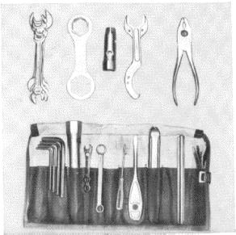

Servicing should be performed,
if possible,
only by an authorized BMW dealer.
Tool Kit supplied with the motorcycle.
15

| Minor Service | Major Service | |||
| every | every | |||
| 3000 miles | 6000 miles | |||
| 1. | Change engine oil, replace oil filter | x 1 | x | |
| 2. | Grease rear swing arm bearings | x | ||
| 3. | Grease brake and clutch levers, throttle grip | x | x | |
| 4. | Service battery | x 2 | x | |
| 5. | Transmission, | oil level | x | x |
| oil change | x 3 | |||
| 6. | Drive shaft housing | oil level | x | x |
| oil change | x 3 | |||
| 7. | Rear wheel drive | oil level | x | x |
| oil change | x 3 | |||
| 8. | Telescopic fork, oil change | x 3 | ||
| 9. | Clean intake air filter | x | x | |
| 10. | Check head and wheel bearing clearance | x | x | |
| 11. | Brakes and Clutch | x | x | |
| 12. | Check adjust carburetor, throttle cables, fuel valve | x | x | |
| 13. | Check spark plugs | x | x | |
| 14. | Check adjust breaker contact gap, | |||
| breaker lubricating felt, ignition timing | x | x | ||
| 15. | Check cylinder head nuts, valve clearance | x | ||
| 16. | Check wheel spokes | x | ||
| 17. | Check brakes | x | ||
| 18. | Tighten nuts and screws | x | x | |
| 19. | Test drive, final inspection | x | x |
| 1 | At least every 6 months, in winter every 1500 miles or every 3 months |
| 2 | At least once a month |
| 3 | At least once a year |
The service operations are described in detail on the following pages, in the same order as in the Service Schedule.
Return to Owners Manual Contents.